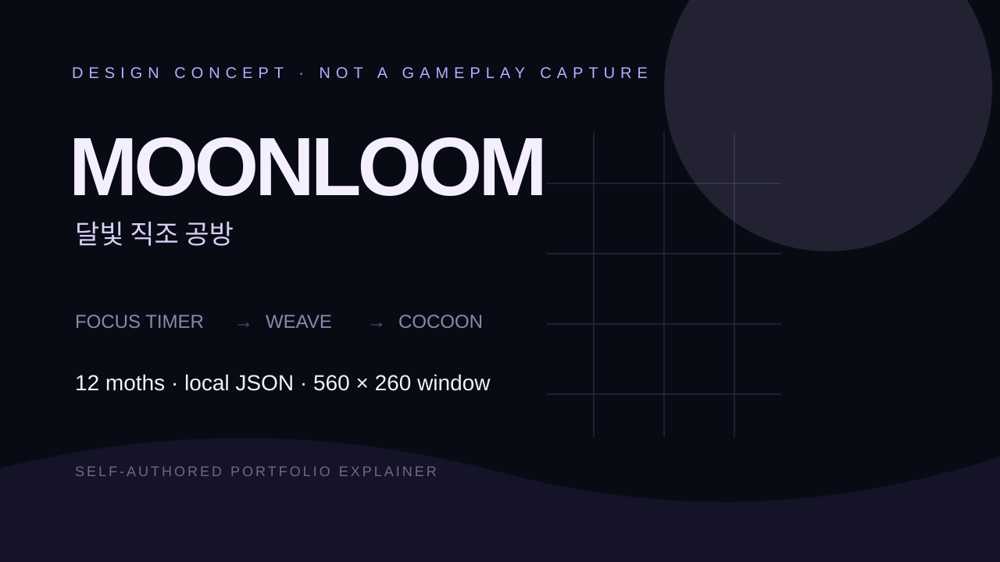

선택형 집중
1·5·25분 타이머를 시작하거나 멈출 수 있으며 다른 앱의 내용과 입력을 감시하지 않습니다.
LOCAL APP WINDOWS · UNITY 6
선택한 집중 시간 동안 나방 정령들이 달실을 짜고, 완성된 고치에서 새로운 수집 나방이 태어나는 560×260 데스크톱 컴패니언입니다.

집중 진행에 따라 실 고르기, 무늬 짜기, 마무리 매듭으로 공방이 변화하고, 완료된 천은 고치가 되어 처음 만나는 나방 또는 중복 보상 별가루를 만듭니다.
1·5·25분 타이머를 시작하거나 멈출 수 있으며 다른 앱의 내용과 입력을 감시하지 않습니다.
날개·무늬·색·표정·장신구를 조합한 절차 그래픽 나방을 도감에 모읍니다.
항상 위, 위치 저장, 모서리 재배치, 클릭 통과와 복구 단축키를 지원합니다.
계정·광고·텔레메트리 없이 원자적으로 교체되는 로컬 JSON에 진행을 저장합니다.